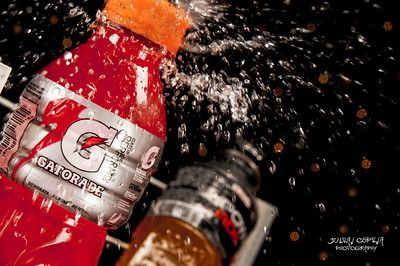
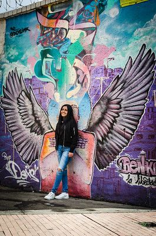
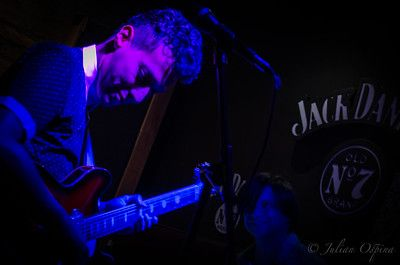
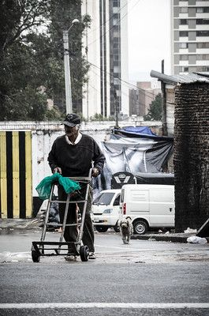
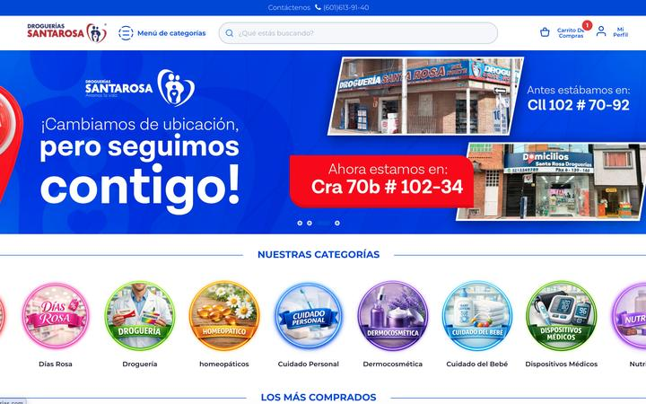
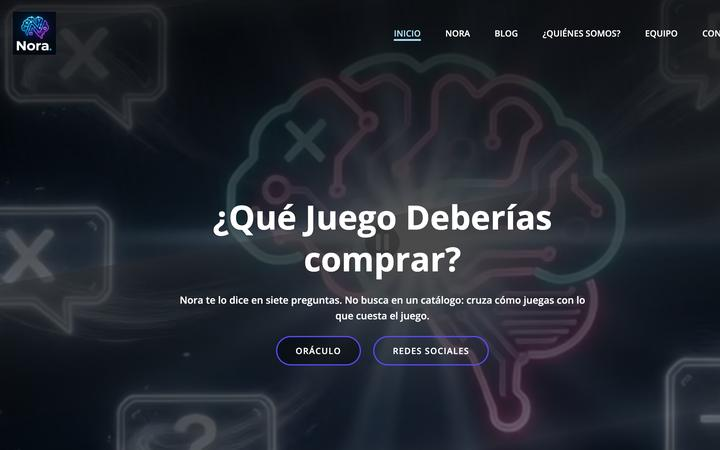
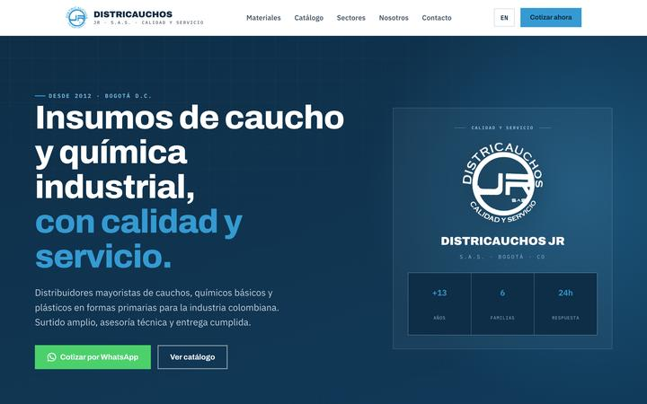
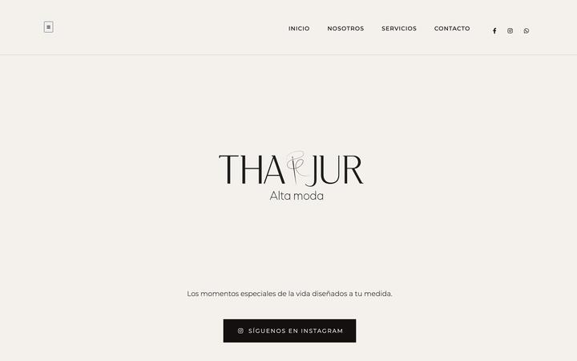

PUBLICIDAD
Conceptualizar · Comunicar · Conectar
JULIÁN DAVID OSPINA / PERFIL PROFESIONAL
Un perfil que conecta estrategia, tecnología y producción visual.
DESCUBRIR PERFIL ↓Un perfil que une la formación publicitaria con la ejecución digital y la producción audiovisual.
Mi experiencia cruza publicidad, ecommerce, marketing digital, desarrollo web y fotografía para convertir ideas en experiencias digitales que generan resultados.
Conceptualizar · Comunicar · Conectar
Analizar · Optimizar · Convertir
Administrar · Mejorar · Vender
Estructurar · Diseñar · Publicar
Encontrar · Optimizar · Posicionar
Crear · Contar · Visualizar
Algunos resultados que aparecen en mi experiencia profesional.
Una misma trayectoria puede necesitar diferentes formas de comunicación dependiendo de quién la recibe.
Mi versión estructurada para procesos de selección digitales.
DESCARGAR CV ↓Mi versión tradicional, clara y enfocada en experiencia.
DESCARGAR CV ↓Mi versión dinámica cuando alguien busca quién soy.
VER PERFIL ↗DROGUERÍAS SANTA ROSA
VTEX · SEO · Catálogo · Landing pages · UX/UI · Contenido digital
VER CASE STUDY +FOTOGRAFÍA PUBLICITARIA
Producto · Marca · Dirección de arte · Retoque digital
Trabajos de la carrera de Publicidad: de la investigación de marca al concepto y la pieza.
Trabajos académicos de la Universidad Central. Las marcas y empresas se analizaron con fines de estudio y no fueron clientes.
Una muestra de mi trabajo en fotografía y producción audiovisual.
324 fotos en 7 álbumes.

02
04
06
324Más fotografía de producto y marca en mi portafolio: joph.portfoliobox.net/publicidad
Sitios reales en los que trabajo actualmente, de la estrategia a la publicación.

Farmacia en línea con entregas en todo el país: medicamentos, cuidado personal, dermocosmética y suplementos.
VISITAR SITIO ↗
Un oráculo que recomienda qué videojuego comprar en siete preguntas, con guías de compra, redes y pauta en Meta para llevar tráfico.

Distribuidora en Bogotá de cauchos, químicos básicos y plásticos para la industria, con asesoría técnica.
VISITAR SITIO ↗
Diseño y alquiler de vestidos, smoking y trajes para ocasiones especiales, hechos a la medida.
VISITAR SITIO ↗08 — CONTACTO
Del brief al creativo final.
ARMEMOS LA IDEA ↗